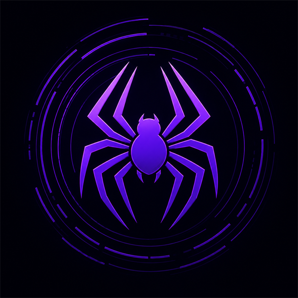

Spider is designed to be simple enough for anyone to learn, yet honest and safe enough for professionals. Its compiler doesn't judge your code — it teaches you.
REAL SPIDER CODE
This is genuine Spider — no null, no exceptions, no semicolons, no ceremony. Every piece below runs today, including in your browser.
choice Shape Circle(radius: Float) Rect(width: Float, height: Float) fn area(shape: Shape) -> Float match shape Circle(r) -> 3.14159 * r * r Rect(w, h) -> w * h for shape in [Circle(1.0), Rect(2.0, 3.0)] say "area: {area(shape)}"
error[E0201]: nothing named `totl` exists here — did you mean `total`? --> main.sp:2:5 | 2 | say totl | ^^^^ what happened: this name is not known here. why: every name must be created before it is used. how to fix: check the spelling — the message suggests the closest name.
FEATURES
Every claim below is implemented, tested, and in the open-source repo — nothing on this page is a mockup.
72 authored diagnostics, each explaining what happened, why, and how to fix it — with "did you mean…?" on every unknown name.
No null, no exceptions, checked integer overflow, and capability security: programs can't touch files or the network unless you say so.
The Silk VM cold-starts in ~20 ms — measured in CI against a 50 ms budget. Your code runs the moment you press Enter.
web install refuses any dependency that wants more capabilities than your project allows — the escalation is spelled out.
Runner, REPL, test framework, zero-config formatter, and a language server for live errors and teaching hovers in any editor.
Spec-first, milestone-gated, 1,120+ semantics tests, and every limitation written down. The ADR log is public.
RUN SPIDER CODE INSTANTLY
The playground runs the actual Spider compiler and Silk VM, compiled to WebAssembly — the same 500 KB of Rust that powers spider run. Nothing is faked or sent to a server.
Open the Playground Start the lessons Read the Book 📄 Download the Book (PDF)
GET THE CLI
One self-contained download — compiler, Silk VM, REPL, tests, formatter, and the web package manager. No install, no runtime, no dependencies.
Download, extract, and double-click Open Spider CLI.cmd. A window opens with the red Spider banner and spider ready to type.
Grab spider.exe on its own, add its folder to your PATH, and run spider from any terminal.
Every release — source, binaries, and notes: github.com/kvAvinashsarma-dev/Spider-Programming-Language/releases
SPIDER VS OTHERS
| Feature | Spider | Python | JavaScript | Rust |
|---|---|---|---|---|
| Errors that explain what / why / how to fix | ✓ | ✗ | ✗ | partial |
| Easy for a beginner's first week | ✓ | ✓ | partial | ✗ |
| No null / no exceptions by design | ✓ | ✗ | ✗ | ✓ |
| Capability security by default | ✓ | ✗ | ✗ | ✗ |
| Checked integer overflow | ✓ | ✓ | ✗ | debug only |
| Exhaustive match, checked by the compiler | ✓ | ✗ | ✗ | ✓ |
| Native machine code | planned (M8) | ✗ | JIT | ✓ |
Honest table: Spider v0.1 is interpreted (native compilation is milestone M8), and mature ecosystems are decades ahead. What's checked ✓ is real and tested today.

ROADMAP TO 1.0
Each milestone ships compiled, tested, and documented — or it doesn't ship. Six are done; the spec for the rest is public.
THE FOUNDER
Avinash founded Spider with one uncompromising idea: programming should be as easy as speaking — without ever becoming a toy. He designed and built Spider in collaboration with Claude (Anthropic) as co-author: specification, compiler, Silk VM, toolchain, and this site.